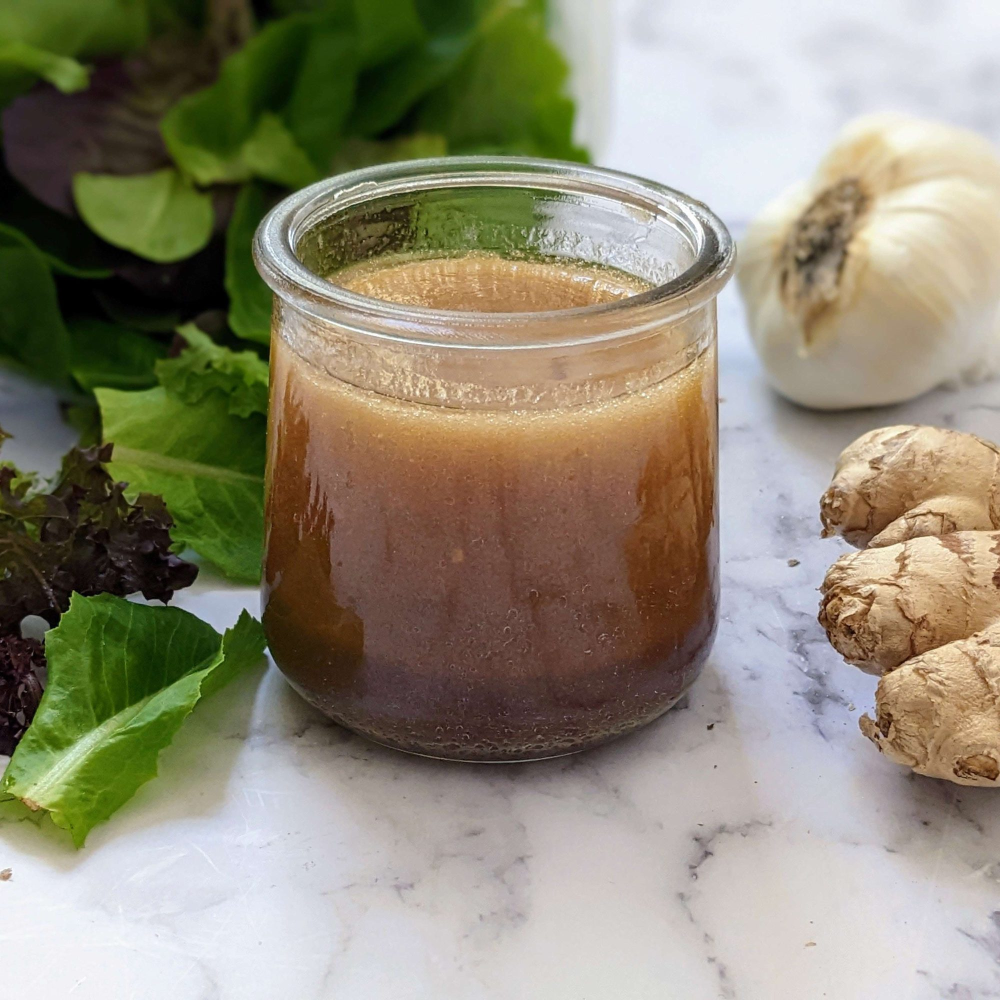

Asian Ginger Dressing

Description
This Asian salad dressing is terrific for all salads, especially cabbage
salads. Everyone who has had the dressing wants the recipe
Ingredients
- ¾ cup olive oil
- ½ cup soy sauce
- ⅓ cup rice vinegar
- ¼ cup water
- 3 tablespoons honey
- 3 cloves garlic, minced
- 2 tablespoons minced fresh ginger root
Steps
-
Combine olive oil, soy sauce, rice vinegar, water, honey, garlic, and
ginger in a 1-pint glass jar. Cover the jar with a tight-fitting lid;
shake well.
-
Remove the lid, then heat the jar in the microwave until honey is
dissolved, about 1 minute. Allow to cool.
- Shake well before serving. Store covered in the refrigerator.